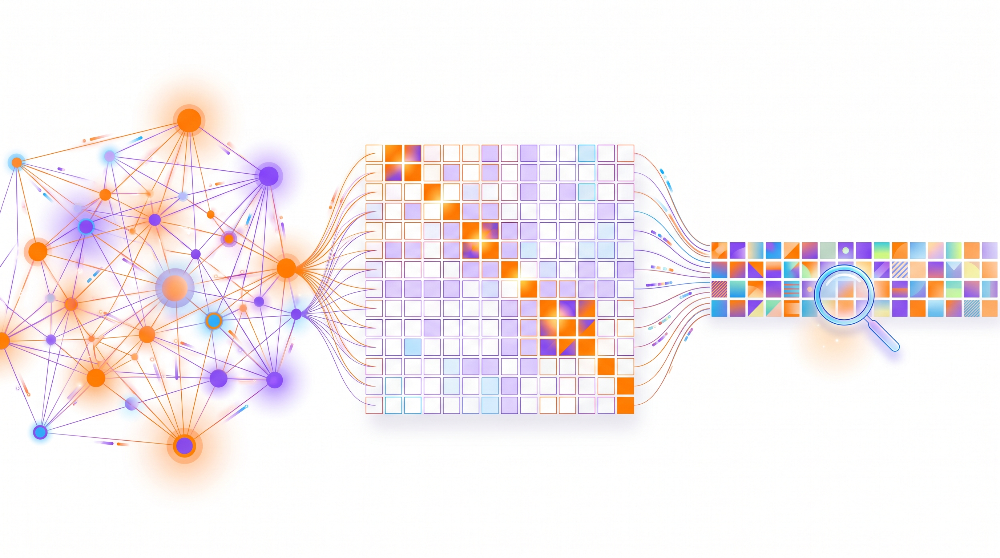
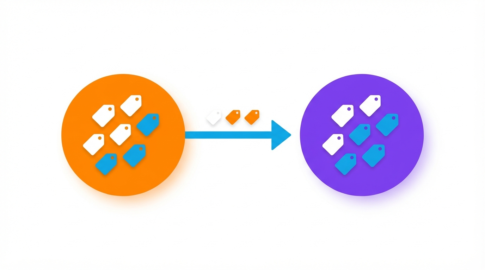
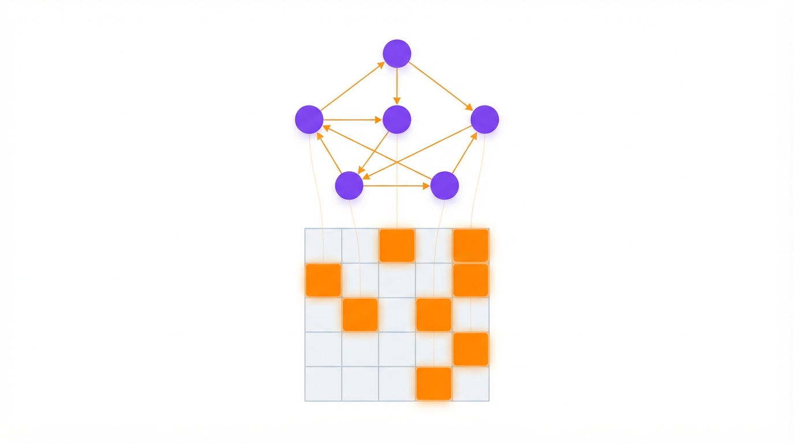
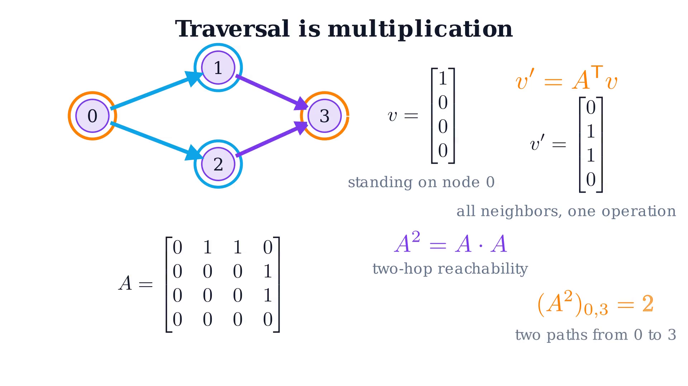
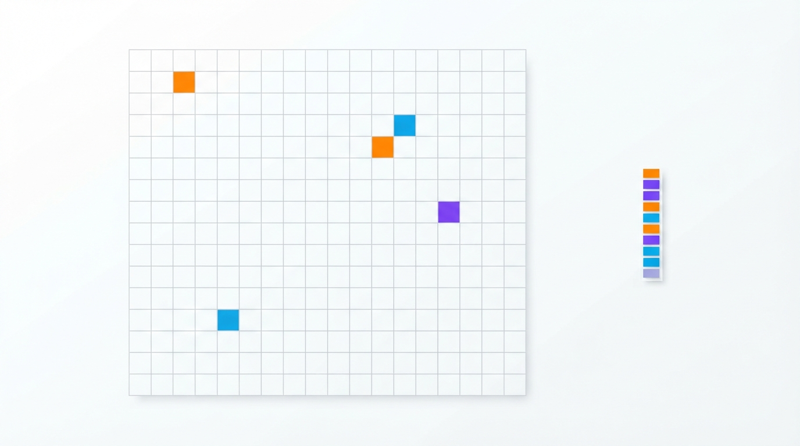
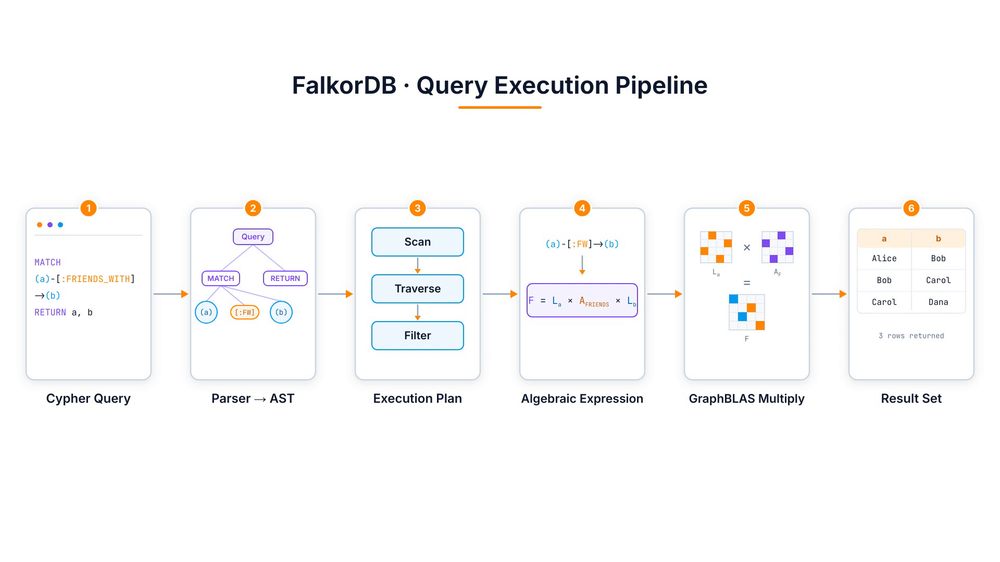
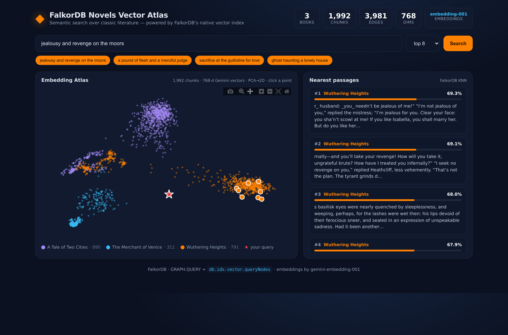

FalkorDB is an ultra-fast graph database with one unusual idea at its core: it stores your graph as sparse matrices and answers queries with matrix multiplication. The payoff is a single engine that does graphs, graph algorithms, and vector search together — which is exactly the shape modern AI, RAG and agent memory need. Here's the whole thing, jargon kept to a minimum.

A graph is really a matrix, and walking the graph is really multiplying by that matrix. FalkorDB leans all the way into that: every relationship type is a sparse adjacency matrix, patterns compile to chains of matrix multiplications, and the heavy lifting runs on GraphBLAS — a battle-tested library for sparse linear algebra. That's where the speed comes from.
It ships as a Redis module, so you start it with one Docker command, query it in openCypher, and get a visual browser for free. And because it also has a built-in vector index, your embeddings live right next to your graph — search by meaning, then hop across relationships for context. One engine instead of three.
Think about the data you actually work with. People know people. Customers buy products. Accounts send money to accounts. The connections are the interesting part. In a relational database those connections live in JOIN tables, and every extra hop — friends, then friends-of-friends, then friends-of-friends-of-friends — means another expensive JOIN. Ask a deep question and the query balloons.
A graph database flips that around. It stores the connections directly, so following a relationship is cheap no matter how deep you go. FalkorDB uses the standard property graph model, which has just two building blocks:

User or Book)
and properties (like a name or an email).FRIENDS_WITH or
LOVES) — and they can carry their own properties too.There's no rigid schema to define up front: you invent new labels and relationship types the moment you use them. That flexibility is why graphs are the natural fit for today's hottest workloads — knowledge graphs for GenAI and RAG, agent memory, fraud detection (fraud rings are literally loops in the graph), and classic recommendations.
Here's the insight that makes FalkorDB different. Take any graph and number its nodes 0, 1, 2, … Now draw a grid with one row and one column per node, and put a 1 in row i, column j whenever there's an edge from node i to node j. That grid is the adjacency matrix. In FalkorDB, every relationship type gets its own.

Why bother? Because once your graph is a matrix, graph operations turn into matrix operations —
and those have decades of fast, optimized math behind them. The classic example is a single hop. Make a vector
with a 1 for every node you're standing on (your "frontier"). Multiply it by the adjacency matrix,
and you land on every neighbour at once — for all starting points simultaneously, in one operation.

Want to go two hops? Square the matrix. "Friends of friends" is literally
A × A, and the result even tells you how many different 2-step paths connect each pair. This
is how FalkorDB thinks about every traversal you write — not as pointer-chasing one edge at a time, but as algebra
over the whole frontier.
"One row and column per node" sounds alarming — a million users would be a matrix with a trillion cells. The saving grace: real graphs are almost entirely empty. Each user knows a few hundred people, not a million, so nearly every cell is a zero.

Sparse matrix formats store only the cells that aren't zero. Memory grows with the number of edges, not with n². FalkorDB builds on GraphBLAS, the standard library for exactly this kind of sparse linear algebra, and it's the first property-graph database to represent its whole graph this way.
You never see the matrices — you write openCypher, the most widely used graph query language. FalkorDB takes it from there:

Your query is parsed and planned, then — this is the twist — each graph pattern is compiled into an algebraic expression: a chain of matrix multiplications. GraphBLAS multiplies those sparse matrices together, and the results stream back. Text in, algebra in the middle, rows out.
None of this shows up in day-to-day use, which is the point. FalkorDB ships as a Redis module, so you start the engine and a visual browser with a single Docker command:
http://localhost:3000Connect from your language of choice (Python, JavaScript, Rust, Java) — the pattern is always connect, select a graph, query:
Then it's just openCypher. You draw the shape you want with ASCII-art arrows; the engine finds every match. Creating data:
And asking a question — "who are Alice's friends?" — is just describing the pattern:
No JOINs, no foreign keys — just the shape of the relationship you care about. Once you've internalized node → arrow → node, you can read most Cypher you'll ever meet.
Here's where it gets genuinely useful for AI. FalkorDB has a native vector index, so an embedding is just another property on a node. That means semantic search and graph structure live in one store — no separate vector database to sync.
To see it in action I built a small demo: three public-domain novels — Wuthering Heights, The Merchant of Venice and A Tale of Two Cities — split into nearly 2,000 passages, each embedded and stored as a graph node with a vector index. The screenshot below is a live search:

Ask for "a merciful judge weighing a pound of flesh" and every top hit lands in Portia's courtroom in The Merchant of Venice — with no keywords in common. But the real superpower is the combination: each result is a node, so you can immediately hop across relationships to its book, its author, or its neighbouring passages. Vectors find meaning; the graph provides context. That is precisely the recipe behind GraphRAG.
Property graph + openCypher, so relationships are first-class and cheap to traverse.
Sparse GraphBLAS matrices under the hood — traversal as multiplication, batched and fast.
Native KNN index in the same store, so embeddings and structure never drift apart.
Most "AI databases" are really three systems taped together: a graph store, a vector store, and glue code keeping them in sync. FalkorDB collapses that into one engine — and does it on an unusually elegant foundation. The theory (a graph is a sparse matrix) buys the performance; the packaging (a Redis module, one Docker command, openCypher, a built-in browser) buys the ease.
The best way to get the intuition is to run it: one Docker command, then paste in a few CREATE and
MATCH lines and watch the browser draw your graph. From there, adding a vector index is three more
lines — and you've got a graph-plus-vector store on your own machine.